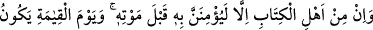
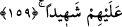

Hz. Meryem’in Allah’ın veli kullarından olduğu kabûl edilir. Onun hakkında ifrat ve
tefrite düşenler, şekâvete düşmüşlerdir. Bu kâide, Allah’ın velî kullarının hepsi için
geçerlidir. Onlara hürmeti terkederek ve eziyet etmek isteyerek onları inkar edenler
şekavete düşenlerdir.
Onlar hakkında gereksiz îtikadlara sâhip olanlar ise, onlara aşırı hürmet göstererek
şekâvete düşerler. Büyük Allah dostlarının çoğu hakkında insanlar bu duruma
düşmüşlerdir. Bu kısım, “et-Te’vîlâtü’n-Necmiyye”den alınmıştır.
Mesnevî’de şöyle denilmiştir:
Nazeninsin, nazlısın, ancak kendi halince
Allah aşkı için, ne olur aşma haddini
Cümle âlem bu sebepten kaybetti yolunu
Çok az insan Hak dostlarından haberdar oldu
İnsanoğlunun sırrının ortaya çıkması için
Uzun zaman gerekir
Beden duvarının altında hazine mi var? Yoksa
Yılan deliği, karınca yuvası, ejderha sığınağı mı?
159- Ehl-i kitaptan her biri, ölümünden önce ona muhakkak îman edecektir.
Kıyamet gününde de o, onlara şâhit olacaktır.
“Ehl-i kitap’tan”, yahûdî ve hristiyanlardan “her biri, ölümünden önce ona” Hz.
Îsâ’ya “muhakkak îman edecektir.” Yâni, bir yâhûdîye ölüm anında âhiret halleri
gösterildiği vakit melekler onun yüzüne ve arkasına vururlar ve: “Îsâ (a.s.) sana nebî
olarak gönderildi de sen onu inkar ettin, yalanladın.” derler. Artık o da inanmanın
kendisine fayda vermeyeceği bir vakitte ona îman eder. Çünkü mükellefiyet zamanı artık
geçmiştir. Melekler, hristiyana da şöyle der: “Allah’ın kulu ve Rasûlü Îsâ (a.s.) size
gönderildi. Halbuki sen O’nun tanrı olduğunu iddia ettin. O’na “Allah’ın oğludur.”
dedin.” O zaman hristiyan O’nun Allah’ın kulu olduğuna inanır, fakat bu îmanın
kendisine fayda vermeyeceği bir zamanda inanmış olur.
Denilir ki, yâhûdîlerden ve ehl-i kitaptan vefat eden her kişi, son anında Hz. Îsâ’ya
îman eder. Ölümü nasıl olursa olsun bu böyledir. Yanarak ölse, suda boğulsa, bir çukura
düşse, göçük altında kalsa ya da onu yırtıcı hayvanlar yese bu değişmez. Hatta İbn
Abbas (r. anhümâ)’a: “Evinden düşüp ölse de böyle midir?” diye sorulmuş, o da:
“Onunla havada konuşulur.” cevabını vermiştir. “Onlardan birinin boynu vurulsa, nasıl
olur?” denilince: “Dilini sağa sola oynatarak ona inandığını söyler.” demiştir.